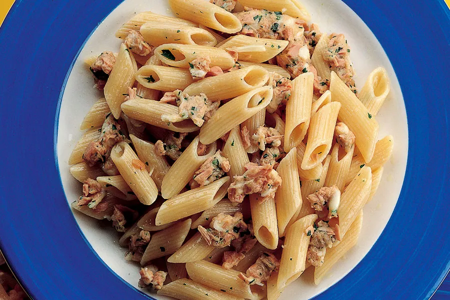

Pasta With Tuna

Want a taste of what being a student in Italy feels like? Then you're in the right place because today we are making a staple of the desperate Italian cuisine: Pasta With Tuna
Shopping List
- Your favorite shape of pasta - 80g per person
- Canned Tuna - 1 can per person
- Optional: Garlic Powder - 1 tsp
- Optional: Parsley to garnish
Steps
- Salt and then boil a half pot of water on high heat
- When the water starts boiling, add the Pasta and wait. The cooking time is stated on the package.
- Drain the pasta, add the tuna (with its oil) and the Garlic Powder
- Plate and garnish
Go to Homepage